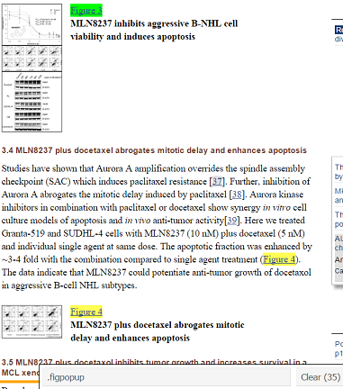
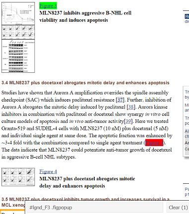
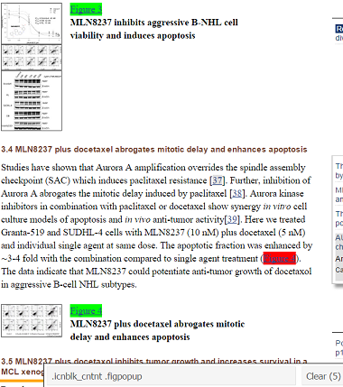

Code, references, and examples of this project are on Github.
In this post, I'll describe the soup to nuts process of automating a literature search in Pubmed Central using R.
It feels deeply satisfying to sit back and let the code do the dirty work.
Is it as satisfying as a bowl of red-braised beef noodle soup with melt-in-your-mouth tendons from Taipei's Yong Kang Restaurant (featured image)?
If you have to do a lit search like this more than once, then I have to say the answer is yes -- unequivocally, yes.
The three components of the project are
I. Design a database to store the contents of a scraping session
II. Extract information via an API and web scraper
III. Generate summary reports
If you want to skip the explanations and go straight to using the program, check out the quick-start HTML5 presentation or manual and an example of a report generated by this project.
Follow @efavdb
Follow us on twitter for new submission alerts!
The task is to capture plots of tumor growth inhibition (TGI), i.e. tumor growth as a function of time, in animals treated with a particular cancer drug, then aggregate all the plots in a summary report.
An example of a TGI plot is provided below (source: Qi 2011) for TGI in mice treated with the cancer drug, Docetaxel.
[caption id="attachment_2047" align="alignnone" width="300" class="left"] TGI plots for several drugs (image credit: Qi 2011)[/caption]
TGI plots for several drugs (image credit: Qi 2011)[/caption]
Since the scraper was intended for a casual (non-exhaustive) literature search, I decided to confine the search to online articles in Pubmed Central (as opposed to Pubmed in general) since they are entirely open-access and available in a mostly uniform format.
I. Set up the the database
This project called for data storage beyond the scope of data frames and external flat files, e.g. Excel spreadsheets or csv files, since the following attributes were required of the data:
- Persistence outside the R environment => data frames unsuitable
- Ease of access and manipulation => writing to and reading from text/csv files would be cumbersome
- The data would be structured => relational database
With a view towards expediency, we cover just enough to get things up and running and leave the finer details of relational database design to the experts.
SQLite is well-suited for this small project; it's self-contained and doesn't require fussing with servers. To lower the barrier even further, the RSQLite package embeds SQLite in R (no separate installation needed) and allows you to very easily interface with your database within the R environment. The database itself is stored in a single file on your hard disk and easily transferred.
What data will be collected?
The first step is to decide what data should be collected during the web scraping process. We want to aggregate images of plots in a (html) report.
However, downloading the images themselves is inefficient; instead, we'll just grab the image URLs on Pubmed Central. (The image URLs are useful because they can be referred to by markdown code to embed the images in the html report.)
The image urls should be captured, along with associated information below:
image data image url, figure name in the article, image caption article metadata Pubmed Central id, DOI, title, journal, year of publication, authors, abstracts, keywords search criteria met by the image topic/drug, type of plot
The last point addresses the foreseeable need to be able to modify the search parameters. In the next section, we allow for the possibility that the same image might show up for more than one kind of drug or plot type.
Decide on a layout for the database
After pinning down the content itself, the next step is to decide how it should be arranged in the database. Namely,
- What tables are needed?
- Which fields go in which tables?
- How do the tables relate to one another?
This particularly helpful page walks you through the concept of database normalization by providing lots of concrete examples, including "anomalies" that arise in poorly designed databases.
Some ideas on normalization are intuitive. Let's take a look at how to restructure a table to satisfy first normal form (1NF). The table below is not in 1NF because it contains sets of values within single rows.
student_id
name
subjects
grades
1234
Andrew
machine learning
linear algebra
modern physics
A
A
B+
5678
Yaser
statistical physics
algorithms
A-
A
Instead, we can break it up into two tables:
table: student
student_id
name
1234
Andrew
5678
Yaser
table: grades
student_id
subject
grade
1234
machine learning
A
1234
linear algebra
A
1234
modern physics
B+
5678
statistical physics
A-
5678
algorithms
A
Column names that are primary keys are underlined. A primary key is a column, or combination of columns, whose values uniquely identify a row in a table (and accordingly guards against duplicate rows). In a first go at a schema, a table without a logical primary key reared its ugly head:
pmcid
topic
123456
drug A
123456
drug B
100000
drug A
Note that the pmcid value is not guaranteed to be unique in the above table because the same article may show up in searches for multiple drugs. This situation hinted at the need to restructure the tables. We finally settled on the three tables below, which all had natural primary keys (underlined):
table: article
pmcid
doi
title
journal
year
authors
abstract
keywords
table: figure
topic
plot_type
img_url
pmcid
table: figure_text
img_url
fig_name
caption
[caption id="attachment_2041" align="alignright" width="263"] Their tables were not in 1NF.[/caption]
Their tables were not in 1NF.[/caption]
The tables "figure" and "figure_text" are kept separate in order to minimize redundancies. For instance, the same img_url can appear in the table "figure" multiple times if it matches a number of different drugs or plot types, but its caption would only need to be stored once in the table "figure_text".
The table "figure" is not in second normal form (2NF) because of a partial key dependency; the pmcid field only depends on img_url, rather than the entire composite key {topic, plot_type, and img_url}.
Although the normalization rules sound a bit intimidating, they are just guidelines--apparently, one can even get carried away with over-normalizing.
The database has held up fine so far, but any suggestions on how to improve the design are very welcome!
Creating a SQLite database in R
With a schema in hand, creating the SQLite database in R is a matter of minutes. First, we load the packages for interfacing with the database.
[code lang="r"]
library(DBI)
library(RSQLite)
Then we create a connection to the database, which we'll call "myDb.sqlite".
[code lang="r"]
con = dbConnect(SQLite(), dbname = "myDb.sqlite")
Next, we create the three tables "article", "figure", and "figure_text".
[code language="r"]
create TABLE figure_text
query = 'CREATE TABLE figure_text(img_url TEXT, fig_name TEXT, caption TEXT, PRIMARY KEY(img_url))'
dbGetQuery(con, query)
create TABLE figure
query = 'CREATE TABLE figure(topic TEXT, plot_type TEXT, img_url TEXT, pmcid INTEGER, PRIMARY KEY(topic, plot_type, img_url))'
dbGetQuery(con, query)
create TABLE article
query = 'CREATE TABLE article(pmcid INTEGER, doi TEXT, title TEXT, journal TEXT, year INTEGER, authors TEXT, abstract TEXT, keywords TEXT, PRIMARY KEY(pmcid))'
dbGetQuery(con, query)
Last, we close the connection to the database.
[code lang="r"]
dbDisconnect(con)
The SQLite database is now ready to be used! The script above is available on github as createSQLiteDatabase.R
II. Scrape Pubmed Central articles
The script pubmedcentral_scraper.R is where the action happens. It takes input from the user to query the Pubmed Central Database, scrape articles, and load the extracted information into the database.
Input keywords for literature search and labels in database
The user input section is shown below.
[code language="r"]
<---------USER INPUT STARTS HERE--------->
name of database where scraper results are stored
database.name = "myDb.sqlite"
maximum number of results to retrieve from query
retmax = 10
topic terms to be queried via the pubmed search engine
query.topic = c("Docetaxel", "Docetaxol")
keywords to identify plot type to be captured
terms should be lower-case
query.plottype = c("tumor growth", "tumor volume",
"tumor size", "tumor inhibition",
"tumor growth inhibition", "tgi",
"tumor response", "tumor regression")
The user input for variables `query.topic` and `query.plottype` are used to construct the query to Pubmed Central via the Entrez Programming Utilities interface (details in the [E-utilities guide](http://www.ncbi.nlm.nih.gov/books/NBK25499/)), made available through the [National Center for Biotechnology](http://www.ncbi.nlm.nih.gov/) (NCBI). To maximize hits to the query, the user can supply multiple terms for each variable.
[code language="r"]
## topic/drug label for database
topic = "Docetaxel"
## plot type label for database
plot_type = "TGI"
## <---------USER INPUT ENDS HERE----------->
The variables topic and plot_type label the data in the SQLite database (the labels should be consistent between queries in order to simplify the information retrieval process, e.g. stick to one spelling convention for a particular drug, like "Docetaxel", in myDb.sqlite).
The first E-utility we will use is ESearch, which returns the PMC ids of articles matching a query, along with other metadata. The E-utilities API is extremely easy to use. Simply string together the set of parameters (NCBI database name, utility name, etc.) and go to the URL.
[code language="r"]
compose url for eSearch
url.esearch = paste0(url.base, esearch, db, "&", retmax,"&", sortmethod, "&", query)
get and parse xml data returned by eSearch
data.esearch = getURL(url.esearch)
The explicit URL constructed from the above example user input is:
*http://eutils.ncbi.nlm.nih.gov/entrez/eutils/esearch.fcgi?db=pmc&retmax=10&sort=relevance&term=(\"Docetaxel\"+OR+\"Docetaxol\")+AND+(\"tumor+growth\"+OR+\"tumor+volume\"+OR+\"tumor+size\"+OR+\"tumor+inhibition\"+OR+\"tumor+growth+inhibition\"+OR+\"tgi\"+OR+\"tumor+response\"+OR+\"tumor+regression\")*
Try copying and pasting the above URL in your browser to see a sample of the xml file returned by E-utilities. Here's an excerpt of the XML document from a query to ESearch on August 25, 2015:
[caption id="attachment_2317" align="alignnone" width="164" class="center"][]({static}/wp-content/uploads/2015/08/esearchXML.jpg) XML output from a query to PMC via the ESearch API.[/caption]
We extract the PMC ids, which are sandwiched between the <Id> XML tags, using functions from the XML and rvest packages:
[code language="r"]
data.xml = xmlParse(data.esearch)
## get pmcid's
pmcids = data.xml %>% xml_nodes("Id") %>% xml_text()
%>% is a pipe operator for chaining commands (from the magrittr package).
The URLs of the html article can be simply constructed from their PMC ids. For example, the html version of the article with PMC id 3792566 is found at: http://www.ncbi.nlm.nih.gov/pmc/articles/3792566
Scrape HTML articles
The scraping of the HTML article is performed by scrapeArticle.R. Note, PMC ids returned by ESearch which have already been scraped for that particular combination of search terms are skipped.
The html version of the PMC articles only show excerpts of captions, so we have to extract the individual figure URLs in order to scrape their full captions (and search for keyword matches). In order to extract a data element from an html document, we need to identify the tag associated with that element.
SelectorGadget is a nifty tool to help you hone in on the CSS selectors of interest. Installation is ridiculously easy: just drag the link on the SelectorGadget page to your browser bookmark bar!
For example, let's identify the CSS selector for figure URLs using SelectorGadget in 3 clicks of the mouse. We'll demo SelectorGadget on a PMC article that is returned in a query on Docetaxel and TGI.
In the screenshot below, I clicked on the "Figure 3" link as a starting point for selecting all such figure URLs. SelectorGadget identified the element as ".figpopup" in the gray toolbar at the bottom of the screenshot, highlighted the direct click in green, and highlighted all the other elements in yellow (total: 35 elements). Notice, however, that two links to Figure 4 have been automatically highlighted in the screenshot, one of which is a reference in the body of the text.
[caption id="attachment_2250" align="aligncenter" width="381"] A click of the "Figure 3" link next to thumbnail highlights it in green. Similar elements are automatically highlighted in yellow.[/caption]
{kind=link}
To reduce the number of redundant figure URL links, I then clicked on the Figure 4 link in the body of the text in order to exclude it; it is accordingly highlighted in red to signify its exclusion.
The pattern-matching is momentarily worsened since the link to Figure 4 (bottom) is no longer highlighted. SelectorGadget's guess for the CSS selector becomes "#lgnd_F3 .figpopup", of which there is only one element, highlighted in green.
[caption id="attachment_2251" align="aligncenter" width="381"] Elements excluded from the pattern matching are highlighted in red.[/caption]
{kind=link}
After making the pattern match more specific with an exclusion, we have to re-generalize by re-selecting the Figure 4 bottom link. This time, SelectorGadget gets the pattern right with the CSS selector ".icnblk_cntnt .figpopup", which describes 5 elements on the page.
[caption id="attachment_2249" align="aligncenter" width="380"] Third time's the charm: SelectorGadget has honed in on the CSS selectors that match the desired figure URLs.[/caption]
{kind=link}
Using rvest's xml_nodes function, we extract components characterized by the CSS selector .icnblk_cntnt .figpopup -- namely, the URLs of tables and figures.
[code language="r"]
popups.tags = article %>% xml_nodes(".icnblk_cntnt .figpopup")
With some more parsing and filtering similar to the above, the full image captions can be grepped for keywords. Caption and image metadata for keyword matches are stored in the SQLite database by `pubmedcentral_scraper.R`.
* * * * *
III. Generate a report of the scraped results
---------------------------------------------
The results of the scraping can be examined by directly querying the SQLite database.
I also put together an R script, `markdown_and_plot.R`, that automatically creates an html report in the simple case where only one topic and plot_type need to be included. The user only has to input the topic and plot_type, and the report is subsequently generated.
`markdown_and_plot.R` calls on `generate_markdown_code.R`, which extracts the image URLs from the database:
[code language="r"]
query = sprintf('SELECT *\
FROM ((figure JOIN article USING (pmcid))\
JOIN figure_text USING (img_url))\
WHERE (topic = "%s" AND plot_type = "%s")\
ORDER BY pmcid ASC',topic, plot_type)
images = dbGetQuery(con, query)
## construct image URLs
img_links = paste0("http://www.ncbi.nlm.nih.gov", images$img_url)
generate_markdown_code.R then loops through the i images per article and, line by line, writes out markdown code of the image URLs and captions.
[code language="r"]
for(i in seq_along(img_links)) {
...
img_md = paste0("
cat(img_md, file=outfile, append=T, sep="\n")
...
}
`markdown_and_plot.R` then reads in the markdown file and renders it into the final html report, containing images embedded via href links, using the `knit2html` function in the knitr package.
[code language="r"]
html.filename = sprintf("scraper_%s_plots_for_%s.html", plot_type, topic)
knit2html(md.filename, output=html.filename)
For a sample report that was generated for topic = Trastuzumab and plot_type = TGI, see here. Note, github automatically renders markdown files into html, whereas html files are displayed as source code. However, the file that is actually intended for human perusal outside Github is the html version, located in the same example subdirectory on Github.
A look at the example report shows that there are a few false positives, i.e. images that don't actually correspond to plots of TGI, but the simplistic grep-keyword-method works well overall. There's plenty of room for improving the code, but as it stands, this code sure beats compiling reports by hand!
We've talked about the thought process behind building the program, but to put it to use, check it out on Github.